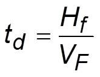
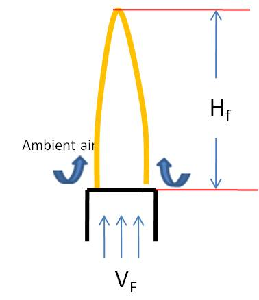
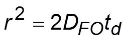
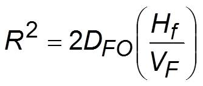
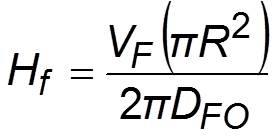
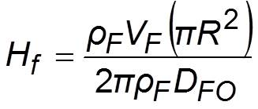
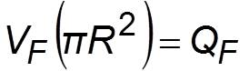
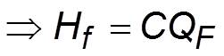
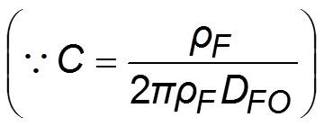

Physically, flame height of Jet Diffusion Flame specifies the maximum distance taken by the fuel along the centerline to diffuse into oxidizer and get consumed completely.
The time taken (td ) by the fuel jet to diffuse into ambient air and get burned completely is given by

(1)

where Hf : flame height, VF: velocity of fuel jet at the burner exit
The average square displacement (r2) due to fuel-oxidizer
inter-diffusion (DFO) as per Einstein diffusion equation is given by

(2)
At the flame tip, the average depth of oxidizer-fuel inter-diffusion layer
is approximately equal to burner radius R. Hence r ~ R

(3)
Multiplying numerator and denominator of Eq. (3) by ?, we get

(4)
Multiplying numerator and denominator of Eq. (4) by density of fuel (?F), we get

(5)
But



It can be observed clearly that the laminar jet flame height is proportional to volumetric fuel flow rate.